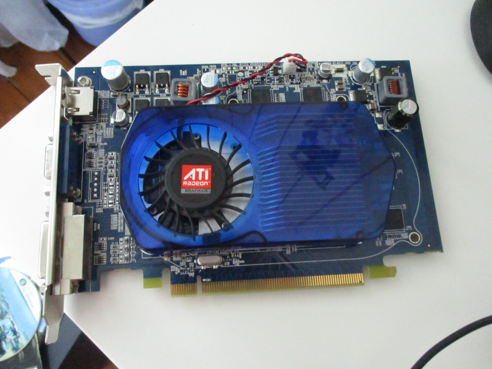
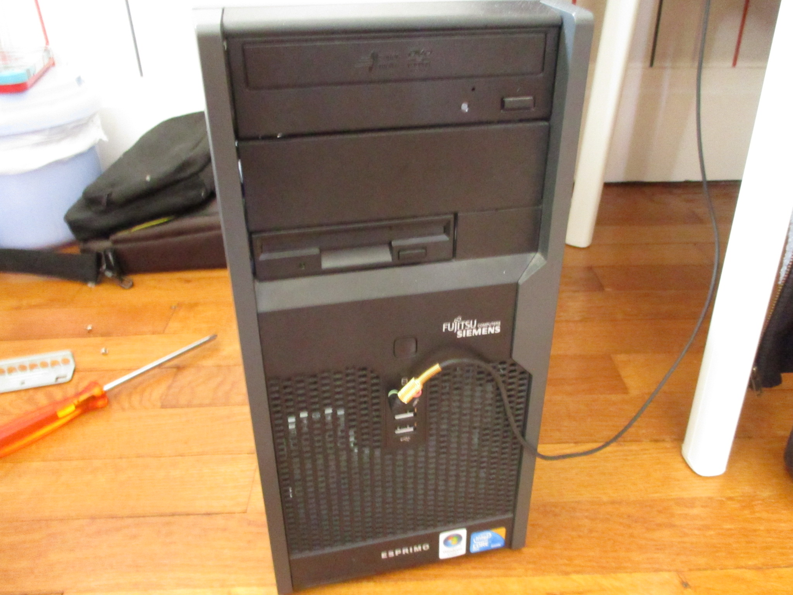
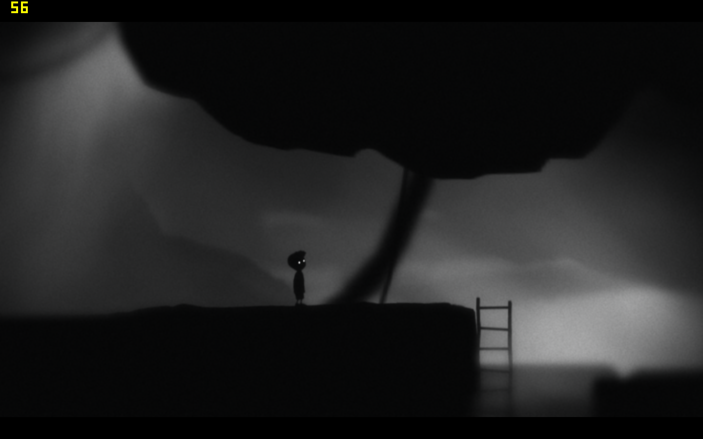
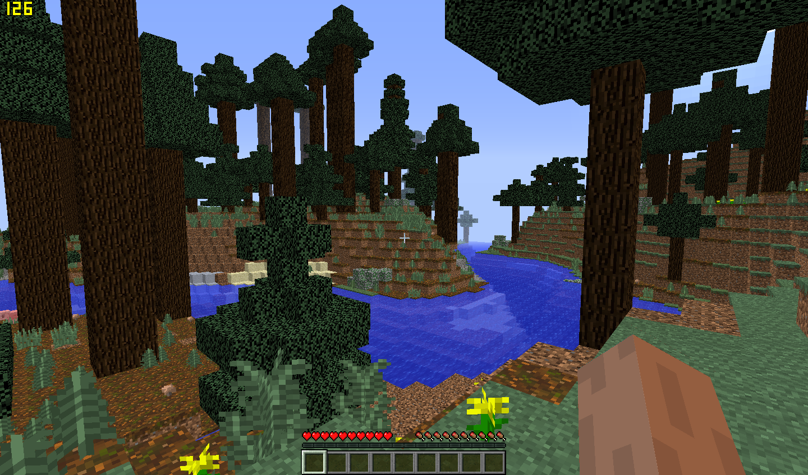
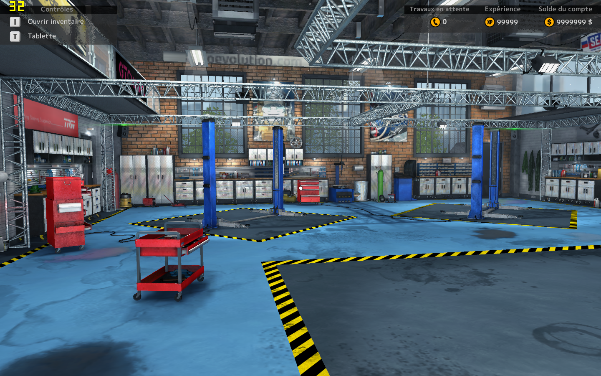

Test de la Radeon HD3650
Il y a quelque temps, j'ai récupéré une Radeon HD3650 provenant d'un PC Acer. Voyons voir ce qu'elle vaut aujourd'hui avec une configuration d'époque.
Étapes
-
Démontage du système de refroidissement de la carte et nettoyage (Tips: si le cache en plastique est rayé, utilisez du nettoyant plastique pour voiture)(~30min)
- Changement de la pâte thermique et dépoussiérage(~15min)
-
Remontage de la carte(~5min)
 -
Installation de la carte dans le PC(~5min)

- Recherche et installation des drivers à partir du site AMD(~5min)
Configuration
Le PC utilisé est un Fujitsu Almino de 2008 avec un Core2duo à 2.66GHZ, 4GO de RAM, un disque dur de 250GO (d'époque), une Radeon HD3650 et un Windows 7 Pro pour faire tourner tout ça.
La carte graphique provenant d'un PC Acer est overclockée d'origine. Elle a ~700MO de RAM au lieu des 512 d'origine. Sa vitesse a été légèrement augmentée.

Les tests
-
3DMark 06 avec un score de : 3799 points

-
Limbo avec un nombre moyen de FPS de :
 -
Minecraft 1.12.2 avec un nombre de 60FPS
 - Car Mechanique Simulator 2015 avec un nombre de FPS

Les plus / les moins
| Positifs | Négatif |
|---|---|
| Présence d'une sortie HDMI: ce qui est plutôt rare pour une carte de cette époque. | Le ventilateur fait beaucoup de bruit ce qui est dû à son âge. |
| La carte ne chauffe vraiment pas. | |
| Elle reste tout à fait utilisable aujourd'hui. On peut lire des vidéos en 720p et faire de la bureautique confortablement. |
Ressource
Voici une petite vidéo de Electro Geek qui montre les différentes étapes ;) lien de sa vidéo Youtube ici